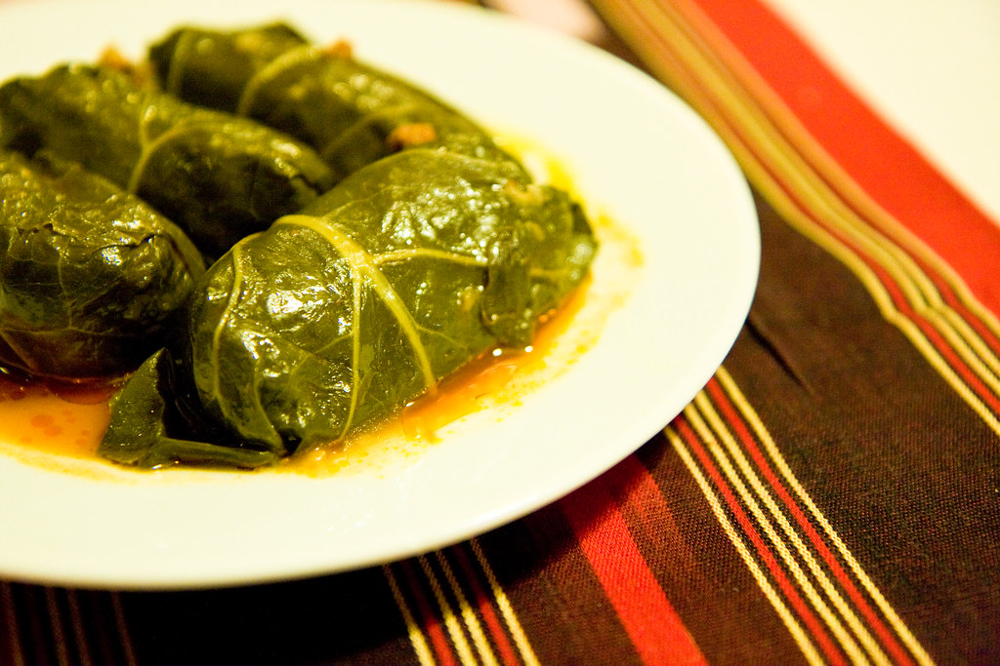

Dolma Recipe

decription
Dolma is a traditional dish in many Middle Eastern and Mediterranean cuisines. It typically consists of vegetables
Ingredients
- Rice: 1 to 2 cups of short- or medium-grain rice (such as Calrose or Baldo), rinsed or soaked
- Meat (Optional): 0.5 to 1 lb of lean ground beef or ground lamb (omitted in vegan/vegetarian versions)
- Aromatics & Herbs: Finely chopped yellow or sweet onions, garlic cloves, and fresh herbs like dill, parsley, mint, and cilantro
- Pastes & Fats: Tomato paste (and sometimes red pepper paste), plus olive oil or vegetable oil for moisture
- Spices & Seasonings: Salt, black pepper, allspice, cumin, cinnamon, paprika, and dried mint
- Regional Additions: Pomegranate molasses, tamarind, or lemon juice for a tangy flavor, and sometimes pine nuts or currants (common in Mediterranean/Turkish styles
Steps
- Prep the Vegetables Hollow out the zucchini, eggplants, bell peppers, and tomatoes (save the scooped pulp for the rice filling). Peel large yellow onions, make a single vertical cut to the center of each, and boil them for 5 minutes until soft enough to peel into individual layers. If using fresh grape leaves, blanch them briefly in hot water.
- Mix the Filling Rinse short-grain rice and combine it with ground meat, finely chopped vegetable pulp, minced garlic, tomato paste, olive oil, pomegranate molasses, Iraqi Seven Spices, salt, and a pinch of citric acid or lemon juice. Mix thoroughly by hand
- Layer the Pot Line the bottom of a large heavy pot with oil, sliced broad beans, and seasoned bone-in lamb chops or ribs. The meat creates a rich foundation and prevents the stuffed vegetables from burning.
- Stuff and Assembly Stuff the vegetable shells (onions, eggplants, peppers) about 3/4 full with rice mix to leave room for expansion. Roll the onion layers tightly around the filling. Place the heavier, sturdy vegetables (stuffed onions, eggplants) directly over the meat layer, followed by delicate grape leaves and tomatoes on top.
- Simmer and Cook Place the pot over medium-high heat for 10–15 minutes without liquid to let the bottom layer sear and release juices. Whisk hot water, tomato paste, pomegranate molasses, tamarind paste, and salt, then pour it over the dolma. Place an inverted heat-safe plate directly on top of the vegetables to hold them tight. Cover, boil for 15 minutes, then reduce heat to low and steam for 45–60 minutes until the rice is tender.
- Flip and Serve Let the pot rest for 10 minutes off the heat. Remove the lid and plate, place a very large flat tray or platter over the top of the pot, and confidently invert the pot onto the tray in one swift motion. Tap the bottom and gently lift the pot to reveal the dolma layer cake.
home